腾讯009TDW计算引擎解析Scheduler
腾讯分布式数据仓库（Tencent distributed Data Warehouse, 简称TDW）基于开源软件Hadoop和Hive进行构建，并且根据公司数据量大、计算复杂等特定情况进行了大量优化和改造，目前单集群最大规模达到5600台，每日作业数达到100多万，已经成为公司最大的离线数据处理平台。为了满足用户更加多样的计算需求，TDW也在向实时化方向发展，为用户提供更加高效、稳定、丰富的服务。
目前TDW计算引擎包括两部分：一个是偏离线的MapReduce，一个是偏实时的Spark，两者内部都包含了一个重要的部件——Scheduler。
本文是TDW计算引擎解析的系列文章之二，对scheduler过程进行解析，并对两个计算引擎的scheduler过程进行比较，对后续的优化方向进行思考和探索，期待经过我们不断的努力，TDW计算引擎运行地更好。
Scheduler介绍
MapReduce的Scheduler介绍
请求类型
- 一个作业一般有3种任务类型需要请求资源执行：jobtracker、map和reduce（jobtracker在调度层面也可以称为一种任务），每种任务类型需要的资源也不同，一个任务会被调度到一个节点上执行：
- jobtracker需要的资源：1个jobtracker对应1个cpu、50M网络带宽、10G磁盘空间、根据map数和reduce数计算出内存需求量；
- map需要的资源：1个map对应1个cpu、10M网络带宽、10G磁盘空间、根据参数设置内存需求量；
- reduce需要的资源：1个reduce对应1个cpu、50M网络带宽、10G磁盘空间、根据参数设置内存需求量；
请求主体
任务资源请求的主体叫session，session和job对应起来，session向ClusterManager发起资源请求，ClusterManager也针对session记录有多少请求量和下发量。整个集群的管理者ClusterManager负责任务的调度。客户端先向ClusterManager发起一个jobtracker的资源请求，请求成功之后会在相应的节点上启动jobtracker服务，jobtracker再向ClusterManager发起map和reduce任务的资源请求，比如有10个map、2个reduce，则会向ClusterManager发起10个map和2个reduce任务的调度请求，请求成功之后，jobtracker向相应的节点提交启动任务的命令，节点启动任务执行。 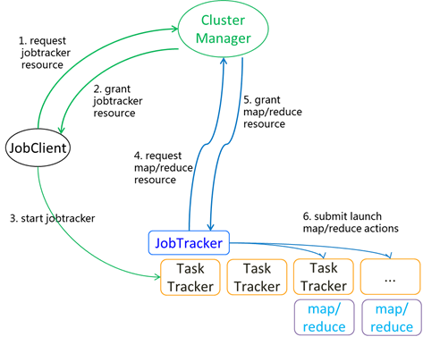
多租户的管理
集群上有很多用户共享使用，都是通过session来请求资源，为了在多租户环境下追求相对公平，ClusterManager对请求采用层级管理模式：物以类聚。某一些session进入某个pool受到这个pool的制约，某些pool进入poolgroup，受到这个poolgroup的制约。Session属于哪个pool哪个poolgroup是怎么知道的呢？Session在向ClusterManager注册的时候就把自身的身份信息带过来了，ClusterManager按照这个身份信息把session加入到相应的pool和poolgroup。 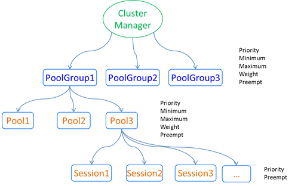
公平调度
上面说了ClusterManager对这些请求是追求相对公平，什么是相对公平，就是在有比较的情况下顾及到大家的感受，在有比较的情况下让大家都爽，但是这些请求相互之间还是有轻重缓急。ClusterManager比较不是凭空的，是依据这些请求的规格。Pool和poolgroup的排场和规格采用一些参数来衡量：优先级、最小值、最大值、权重、是否可被preempt，session的规格采用一些参数来衡量：优先级、是否可被preempt。ClusterManager依据这些规格来给他们排座次，排第一的就被第一个调度。
上述调度模式叫公平调度，不会让某个资源池饿死也不会让某个资源池独享，追求多租户相对公平地共享集群资源。
独立并发的调度
ClusterManager对jobtracker、map和reduce三种类型任务进行独立并发地调度，每种类型对应一个调度线程。 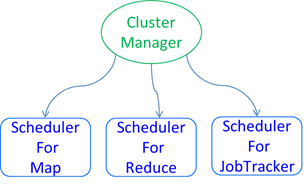
调度过程
调度线程不断循环往复地进行着调度，每一轮都进行着三部曲操作：快照、调度和preempt。
快照
每次调度之前都对当前的请求做个快照，调度只对这个快照进行，做完快照之后新加进来的请求需要等到下一轮了。
快照自下而上：
- 取得session在这种类型上的请求量、等待量、下发量，把session快照加入到session列表；
- 取得pool在这种类型上的请求量、等待量、下发量，把pool快照加入到pool列表；
- 最后取得poolgroup在这种类型上的请求量、等待量、下发量，把poolgroup快照加入到poolgroup列表。
调度
- 一轮最多只调度5000个任务。
- 每次调度一个任务的时候，都对上面的快照列表自上而下的排座次，排序列表采用的是PriorityQueue，时间复杂度为O(log(n))：
- 如果poolgroup之间已经排好座次了，则移出第一个poolgroup，否则对poolgroup之间按照FAIR或者FIFO方式排座次，然后移出第一个poolgroup；
- 这个poolgroup的pool之间已经排好座次了，则移出第一个pool，否则对这个poolgroup的pool之间按照FAIR或者FIFO方式排座次，然后移出第一个pool；
- 这个pool的session之间已经排好座次了，则移出第一个session，否则对这个pool的session之间按照FAIR或者FIFO方式排座次，然后移出第一个session；
- 然后从这个session等待调度的任务中选择一个进行调度，如果调度成功则把上面移出的poolgroup、pool、session加回相应的列表，重新排座次。
- 每次把poolgroup、pool、session加回到列表时，他们的下发量都是相应地增加1了，这可能会影响重新排座次的顺序。这一轮调度中，如果pool1位置第一，则第一遍调度之后，重新排座次，pool1可能还是名列前茅，则第二遍还是调度pool1，pool1也可能座次落后，第二遍就调度新的老大了。
- 每次取出poolgroup、pool准备调度时，如果下发量已经达到了最大值，则会直接跳过这个继续取出下一个。
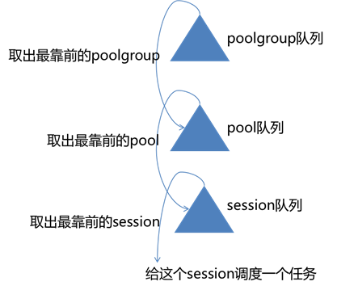
上面提到的排座次有两种比较方式：
FAIR:
- 比较优先级，优先级高的靠前；如果优先级一样则继续比较；
- 比较是否饥饿（已下发的数量是否小于最小值，如果小于则饥饿否则不饥饿），饥饿的靠前；如果都不饥饿或者都饥饿则继续比较；
- 如果都饥饿，则计算给予程度（已下发数量/最小值），给予程度小的靠前；如果都不饥饿，则用另外一种方式计算给予程度（已下发数量/权重），给予程度小的靠前；如果给予程度一样则继续比较；
- 用FIFO方式比较；
从FAIR的比较条件中可以看出，被优先调度的条件有：
- 优先级高的靠前，最小值大的一般比较靠前，权重大的一般比较靠前；
FIFO：
- 比较优先级，优先级高的靠前；如果优先级一样则继续比较；
- 比较开始时间，开始时间早的靠前；如果开始时间一样则继续比较；
- 用名字字符串比较。
对session的任务请求进行调度分为两阶段：查找可调度的节点、提交资源。
- 首先计算得到整个集群在这种类型请求上的平均负载，然后尝试两轮遍历：第一遍，遍历整个集群的可用节点，判断节点是否有足够的内存和磁盘空间，还需要判断节点的负载是否低于平均负载；如果第一遍遍历没有找到合适的节点，则进入第二遍遍历，遍历整个集群的可用节点，判断节点是否有足够的内存和磁盘空间，不再判断节点负载。
- 经过这次遍历查找到调度节点之后，尝试着为这个请求提交资源，进一步判断节点的可用性：cpu足够、内存足够、磁盘空间足够；判断通过之后就正式地为请求授权资源，把这个任务对应的调度节点信息加入到下发队列。
- 对于map这种请求，对本地化要求比较高，会把对应split的数据节点带过来，调度线程会优先对这些节点进行选择。
- 请求还会把一些排除节点带过来，比如在某个节点上执行失败过一次，下次再请求的时候就把这个节点作为排除节点带过来，希望调度线程调度的时候对这个请求不考虑这个节点。
- 这一轮调度过程完毕之后，要把调度的节点信息下发到请求者。
- Scheduler会创建十几个通知线程，根据session名称的hashCode选择把通知加入到哪个线程中，这些线程异步地进行下发通知工作。通知线程会把同一个session的通知放在一起，周期性地检测如果有下发通知时，依次把这些session的通知一次性的下发给请求者。

Preemption
Preemption一般发生在集群资源不够的情况下，因为如果集群资源还有空闲时，是不需要preemption的。如果集群没有超卖而且每个资源池都有最大值限制的话，这时候每个资源池都达到了最大值，资源池之间也就不存在谁该被preempt的了。一般集群为了追求高利用率，会有超卖的配置，在集群资源没有空闲时，一些资源池往往没有达到自己的规格就获取不到更多的资源了。
Preemption是在集群资源不够的情况下仍然追求调度的相对公平而对一些已经下发的资源收回进行重新分配的过程。Preemption发生时会收回一些最该被preempt的资源调度给最该被弥补的请求。
那怎样判断哪些是最该被preempt的呢？用一个期望公平值（share）来衡量。当整个集群使用了一定数量的资源，每个资源池按道理该占其中的多少，如果不够就该去preempt，如果超了就该吐出来。比如整个集群已经分配了1万个cpu，按照A资源池的规格，应该分得3000个cpu，这个就是A的share值。
计算share值的过程如下：
- 计算整个集群分配的cpu总和totalShare。
- 再计算资源池的share值。用二分迭代的方式查找到
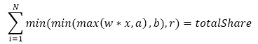
这个方程的解（其中N代表资源池数量，w代表资源池的权重，a代表资源池的最小值，b代表资源池的最大值，r代表资源池的请求数量）。也就相当于用个什么比例可以把totalShare分摊到各个资源池。得到这个解x之后，计算出每个资源池的share值：min(min(max(w * x, a), b), r)。
然后对每个资源池的session计算s_share值。用二分迭代的方式查找到
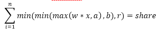
这个方程的解（其中n代表资源池中session的数量，w代表session的权重，a代表session的最小值，b代表session的最大值，r代表session的请求数量）。也就相当于用个什么比例可以把share分摊到各个session。得到这个解x之后，计算出每个session的s_share值：min(min(max(w * x, a), b), r)。
如果资源池处于饥饿状态，则这个资源池期望preemption获得的数量为min(pendingNum, share - grantedNum)，接着上面的例子，对于A资源池来讲，按道理它应该分得3000个资源，但是实际上它才获得2000，所以它还需要再获得1000个，但是如果这时候它没有请求在等待，自然而然就不需要去preempt了，如果它还有不止1000个请求在等待，那也没办法，最多只能去preempt 1000个。老大，这毕竟是去preempt别人的，别太狠，按你的规格讲，1000个是使用公平算法结合大家一起计算出来的，算厚道了。
使用这一套把各个资源池期望通过preemption获得的数量总和计算出来，然后就开始着手实施。
并不是想怎么preempt就怎么preempt的：
如果资源池有“不可被preempt”的免死金牌，则这个资源池就可以大摇大摆的被放过。
按照公平preempt算法对资源池进行排序，得到最该被preempt的资源池，然后session也按照公平preempt算法排序，得到最该被preempt的session，然后对这个session进行preempt。之所以排序，是为了降低被preempt的代价。
preempt多少？它超出了公平值多少就preempt多少：grantedNum - share。
对于这个session来说，它有这么多已经下发的资源，该舍弃哪些呢？有个时间界限，比如5分钟，下发时间在这个时间之内的，全部加到候选列表里，如果这样选出来的候选列表数量小于preempt值，那候选列表里的资源全部被释放，如果大于preempt值，按照开始时间排序，最近下发的释放，老的保留。毕竟那些已经执行这么久了，放弃的话代价太大。
这一次找到了这个session，preempt了一部分资源，可以向上层交差了，直接返回给上层，上层看preempt的数量够了，宣布结束，如果preempt的数量不够，则进行下一轮preempt。
公平preempt算法结果就是上面介绍的FAIR算法结果的负值。
Spark的Scheduler介绍
两路调度
Spark集群中可以并发执行多个application(SparkContext实例)，每个application中可以执行单个job也可以并发执行多个job。 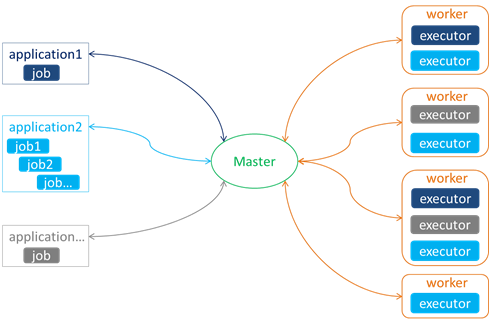
Spark中的调度相应地分成两路调度：application之间的调度和application内job之间的调度。
Application之间的调度
Application之间的调度在master侧进行，主要是给application批发一批executor，application之间分配各自独立的一批executor。Application之间的调度采用FIFO方式。
Application在初始化过程中会生成一个AppClient作为application的客户端，通过这个AppClient向master注册一个application，同时向master带过去的还有对资源的需求：要多少内存和cpu。
Master接收到这个注册请求之后创建一个application加到等待队列里，然后对等待队列中的application采用先来先服务的方式逐一地进行调度，主要就是根据这个application的需求看能分配哪些executor：
master知道所有活动的worker；master首先从这些active worker列表中挑选满足条件的worker：剩余内存满足要求，同时没有这个application的executor在这个worker上执行；把挑选出来的worker按照可用cpu数降序排列。
对这个worker列表轮询地分配cpu，每次分配1个cpu core，当列表到尾之后从头再来；通过这种轮询的方式得到每个worker上可以为这个application分配多少个core。
master记录哪些worker为这个application贡献了executor，并向这些worker发送命令启动executor。
worker启动executor会向application注册这个executor；application接收到executor注册消息之后将executorId、核数、地址等加入队列，作为application独享的executor了。
这样master就为这个application分配了一批executor。
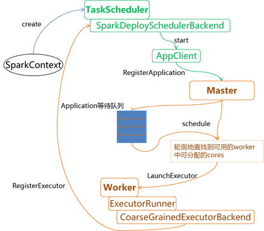
对某个application的调度很可能不是一次都能满足要求，那么调度过程不是一劳永逸的，而是当有资源时就进行调度过程：当有worker注册过来时，当有application释放时。不过FIFO的方式就限制了只有前一个application满足之后才能轮到下一个application。
Application内部的调度
Application内部job之间的调度在客户端侧进行，主要是在批发过来的这些executor中调度执行job。
客户端侧具有两个调度器：DAGScheduler和TaskScheduler。一个作业(job)具有若干个阶段(stage)，这些stage构成一个DAG，每个stage又包含一些任务(task)。所以从层次角度上讲，DAGScheduler处于上层与stage的调度对应，TaskScheduler处于下层与task的调度对应，这也从两者的名字中可见一二。
下面看看这两个调度器各自发挥什么样的作用。
DAGScheduler
- 客户端提交作业的入口会将作业提交给DAGScheduler。
- DAGScheduler处理作业提交事件，根据RDD的依赖关系构造DAG的每个stage，然后从父阶段到子阶段依次提交stage。
- DAGScheduler在提交每个stage时都会为其创建task，如果stage需要shuffle输出的话就创建ShuffleMapTask否则创建ResultTask，然后把这些task放在一个TaskSet中提交给TaskScheduler。
TaskScheduler
- TaskScheduler接收到这个TaskSet之后，根据设置的调度本地化级别对其中的task查找调度到哪个executor去执行，然后将这些task发送给executor去执行。
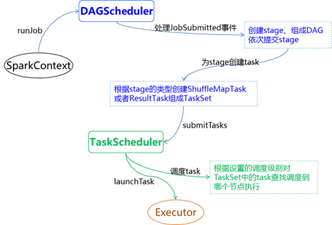
多租户的管理
TaskScheduler对task的管理也采用pool的方式：
- 首先有一个rootPool来管理所有的下属pool；
- pool管理所有的下属TaskSet；
- TaskSet管理某个stage的task；
- pool的规格用最小值和权重来表达。
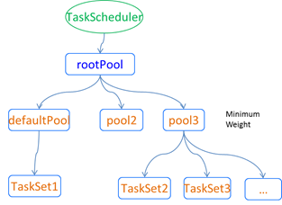
TaskScheduler采用FIFO或者FAIR的方式对task进行调度。下面来介绍下FAIR的方式。
TaskScheduler对task进行调度时，首先对pool按照公平算法进行排序，然后对每个pool中的TaskSet再按照公平算法进行排序，最后得到这个全局排序列表。公平比较算法如下：
- 比较是否饥饿（已下发的数量是否小于最小值，如果小于则饥饿否则不饥饿），饥饿的靠前；如果都不饥饿或者都饥饿则继续比较；
- 如果都饥饿，则计算给予程度（已下发数量/最小值），给予程度小的靠前；如果都不饥饿，则用另外一种方式计算给予程度（已下发数量/权重），给予程度小的靠前；如果给予程度一样则继续比较；
- 用名字字符串比较。
- 对全排序之后的TaskSet列表依次进行调度：
- 轮询executor列表；
- 再依次使用调度本地化级别：PROCESS_LOCAL、NODE_LOCAL、RACK_LOCAL、ANY；
- 然后轮询TaskSet中的task；如果这个executor的可用cpu还满足要求，按照调度本地化级别判断task是否可以调度到这个executor上。
MapReduce和Spark的Scheduler过程对比
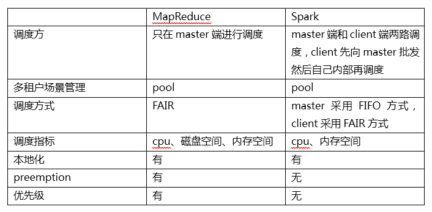
Scheduler后续优化方向
下面列举一些现在看可以优化的方面，TDW正在实施这些优化，期待经过我们不断的努力，TDW计算引擎可以运行地更好。
MapReduce Scheduler后续优化方向
- 将磁盘io和网络带宽作为调度指标参与进来，如果一个节点的磁盘io或者网络带宽超过一定阈值时就不作为候选节点；
- 当小job和大job在一个资源池时，比如分钟任务和天任务在一个资源池，这时候小job会受到大job的影响，可以自动的将这样的小job优先级提高以更快地获取到资源；
- 槽化的cpu、内存调度指标向更精细的资源指标发展，希望使用资源的实际值而不是逻辑值，这个需要依据任务的统计信息进行优化；
- 本地化和节点负载之间进行权衡。
Spark Scheduler后续优化方向
- Spark的模式有Standalone、Mesos和YARN，Standalone是Spark自己来做调度，Mesos和YARN模式下，Spark把调度依托给了第三方调度模块。对于Standalone模式，Spark Scheduler还有些地方需要进行优化，TDW正在进行实施，希望做得更好：
- 本地化和节点负载之间进行权衡，避免本地化task较多造成节点负载很大；
- 资源管理精细化，不是简单地使用槽化的cpu，而是使用节点实际负载等；
- Master对application的调度也希望使用FAIR方式而不是FIFO方式，当多租户共享集群的时候，每个application都有一定的资源可以使用；
- 调度能增加优先级和抢占两个功能；
- 用户使用多少资源，master没有做控制，应该提供pool的方式对多个application之间的资源进行限制。